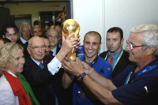

ПРИВЕТ УЧСТНИКАМ СОРЕВНОВАНИЙ |
|
| Виды спорта |
ФУТБОЛ Полное англоязычное название игры, «association football» («футбол по правилам Ассоциации»), было выбрано после создания английской Футбольной ассоциации в 1863 году, чтобы отличать эту игру от других разновидностей футбола, существовавших в то время, например регби-футбол («rugby football», «футбол по правилам Школы Рагби»), где была разрешена игра руками. |
|
ГЛАВНОЕ НЕ ПОБЕДА, А УЧАСТИЕ! |
|